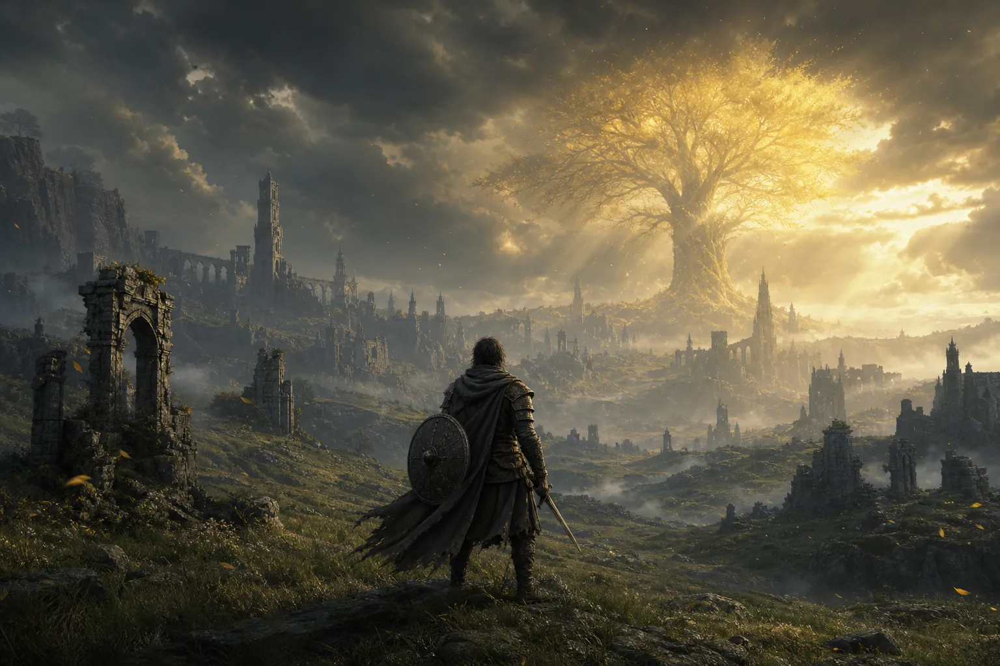
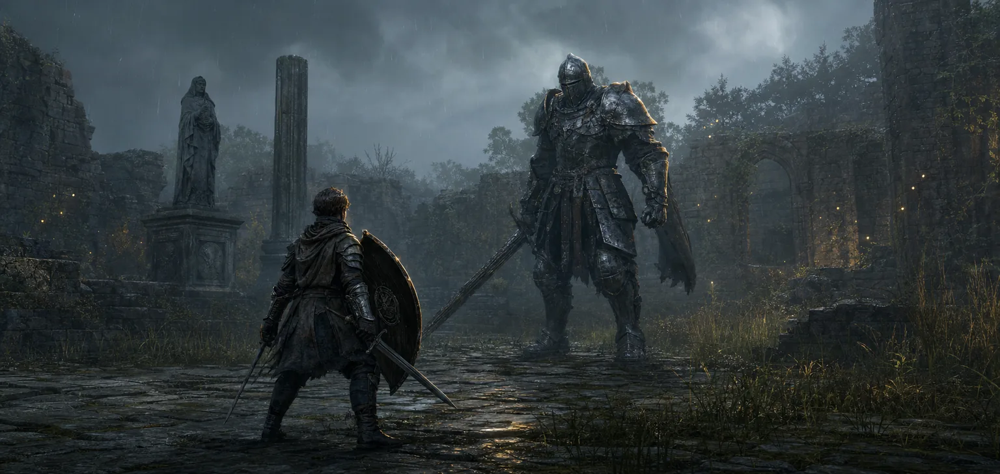

If something feels brutally hard, go somewhere else.
The world is your difficulty slider. Mark the spot, explore, upgrade, and return. The Tree Sentinel is placed near the beginning specifically to teach this.

A beginner companion
A spoiler-light field guide for getting deep into the game without wandering in circles, ruining your build, or beating your head against the wrong boss.
Only mild location spoilers through the first castleYou do not need a walkthrough. You need a few good habits and permission to leave.
The world is your difficulty slider. Mark the spot, explore, upgrade, and return. The Tree Sentinel is placed near the beginning specifically to teach this.
Aim for about 25–30 Vigor early. Health buys learning time. Damage stats barely matter until your weapon is upgraded.
Open Equipment and check the right side. If it says Heavy Load, remove armor or weapons until it says Medium.
Early weapon upgrades give far more damage than scattering levels across Strength, Dexterity, Intelligence, Faith, and Arcane.
Spirit ashes, NPC helpers, co-op, shields, status effects, and strong weapon skills are all normal parts of the combat system.
This route unlocks the basic systems, gives you room to learn, and avoids pushing you into the first major boss too soon.
Learn the controls, unlock Torrent and spirits, test weapons, and clear small dungeons.
Follow roads, visit churches, investigate mines, and treat every ruin as a small question.
It is a forgiving early region with flask upgrades, useful equipment, and a manageable castle.
You will arrive with more health, stronger flasks, an upgraded weapon, and actual combat instincts.
For the first castle, a comfortable beginner is often around level 25–35 with a regular weapon near +3 to +5, several flask charges, Medium Load, and a spirit they understand. These are guide rails, not requirements.
Starting class is a head start, not a permanent choice. Choose the play style that sounds fun; you can respec later.
Use a 100% physical-block shield, block ordinary hits, then guard counter with a heavy attack. Remove an extra weapon immediately if your starting equipment causes Heavy Load.
The katana is excellent, the bow gives you a safe pull, and bleed rewards sustained pressure. Two-hand the katana when you do not need the shield.
Keep a melee weapon for small enemies, allocate some flasks to FP, and create distance before casting. Level Vigor anyway—being a mage does not make one-shot deaths fun.
Rune returns are tiny, and some weapons are unique per playthrough. Store unwanted gear in your chest instead. Golden Rune items are your safe, unlosable bank.
Enemies ask a question with an attack. Your job is to answer safely, take one clean punish, and reset.

Do not heal merely because you are far away—many bosses are built to punish that. Bait an attack, dodge it, then use the recovery window to drink instead of attacking. A pillar or terrain break can also create safety.
The map is intentionally incomplete, but it gives consistent visual clues. Follow curiosity before objectives.
Map fragments usually sit at those roadside stone pillars. You can see the pillar symbol even before revealing the region.
Dark, reddish-rimmed tunnel marks on the revealed map often indicate mines packed with smithing stones.
Golden Seeds increase your number of flask charges when used at a Site of Grace.
Sacred Tears improve how much each flask restores. Use them through the Flask menu at a grace.
Guidance of Grace points toward major objectives. It does not mean “you should go here now,” and it may continue pointing toward a place you already explored. Treat it as a compass, not a quest marker.
Give it a few serious attempts. Then diagnose the problem instead of repeating the same fight while tilted.
If recovering a small rune pile is making you miserable, abandon it. The game gives dramatically more runes later. Your knowledge, unlocked graces, upgrade materials, and found equipment are the progress that matters.
Elden Ring has no traditional quest log. You are not expected to complete every character story blind in one playthrough.
Play the first major regions mostly blind. If an NPC fascinates you, look up only their next step after you have searched naturally. Near the late game, use a missables checklist if completion matters more to you than surprise.
Almost never. You eventually unlock stat respecs, weapon upgrades can be farmed or purchased, missed spirit-bell access has a backup shop, and most failures cost only runes. Some NPC outcomes and unique items are missable, but your build is highly recoverable.
Ordinary weapons use Smithing Stones and go to +25. Special weapons use Somber Smithing Stones and go to +10. Somber levels are much larger jumps; a +3 somber weapon is not equivalent to a +3 regular weapon.
It means spirit summoning is available in that area. Equip a spirit ash, ensure you have enough FP or HP for its cost, and use it once per encounter. Spirits cannot normally be used while a multiplayer ally is present.
Put Torrent’s whistle, your favorite spirit ash, and two frequently used utility items there. Keep healing and FP flasks on the normal quick-item bar so holding the cycle button can jump back to the first slot.
Useful official references: Bandai Namco’s complete starter guide and early-game tips. Both explain the core systems without requiring a build wiki.
Fan-made beginner guide for Elden Ring. Elden Ring and its names are trademarks of FromSoftware and Bandai Namco Entertainment. Original editorial illustrations were generated for this page; no official game artwork is reproduced. Updated July 2026.